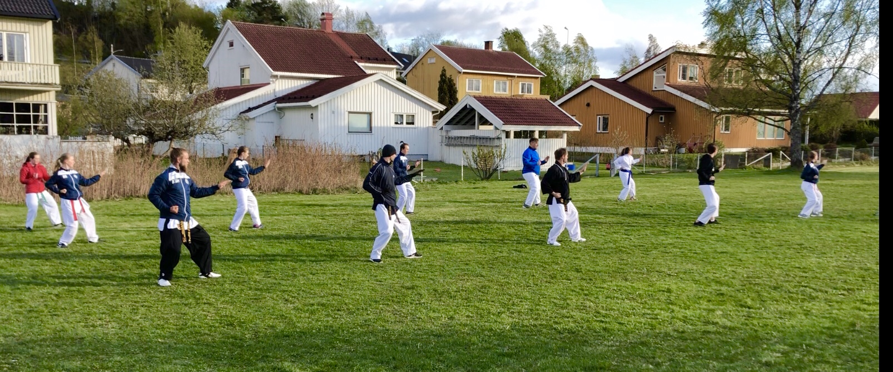
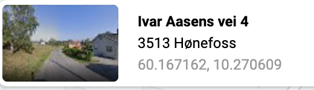

Arrangement
Trening uke 25, siste treningsuke for sesongen!

For uke 25 vil klubben ha disse treningene
Dette er vårsesongens siste treninger. Eventuelle treninger i sommer blir annonsert her og på facebook :) Som tidligere annonsert blir det dessverre ingen graderingen denne sesongen. Dette er på grunn av at at det har vært lite og sporadisk trening siden vinterferien. Vi takker for i år, og ønsker alle en god sommerferie! Ellers håper vi å snart flytte inni våre nye lokaler og gleder oss til en spennende høstsesong. Vi håper alle vår medlemmer har hatt det bra gjennom denne rare våren, og er klare igjen til å begynne å trene igjen når ting normaliseres. Og vi håper gjerne dere vil være med å trene med oss, ute i de deilige været siste uka i årets sesong! Tirsdag 16. Juni. Barn og tiger. 1800-1900 og Ungdom og voksen 1915 -2015. (Instruktør Artsiom og Ida) Torsdag 118. Juni. Barn og tiger. 1800-1900 og Ungdom og voksen 1915 -2015 (Instruktør Geir og Helene) Alle treninger vil foregå på fotballbanen på Vesterntangen med forbehold om oppholdsvær.
